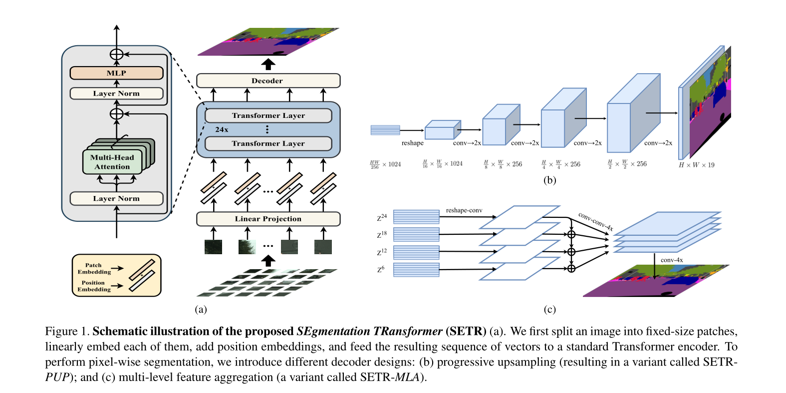

SETR
Dosovitskiy, Alexey, et al. “An image is worth 16x16 words: Transformers for image recognition at scale.” arXiv preprint arXiv:2010.11929 (2020).
Zheng, Sixiao, et al. “Rethinking semantic segmentation from a sequence-to-sequence perspective with transformers.” Proceedings of the IEEE/CVF Conference on Computer Vision and Pattern Recognition. 2021.
论文简介
SETR：用 Transformer 从 Sequence-to-Sequence 的角度重新思考语义分割。
最早于 2020 年 12 月发布于 arXiv。
会议：2021 CVPR
一作单位：Fudan University & Tencent-Youtu Lab
Abstract
语义分割大多使用空洞卷积和注意力模块来扩大感受野，提升对全局上下文的建模能力。本篇论文基于 ViT，使用一个纯 Transformer（没有卷积和分辨率降低）来将图片编码为一系列的 patch。通过在 Transformer 的每一层建模全局上下文，该编码器结合一个简单的解码器可以形成强大的分割模型，命名为 SEgmentation TRansformer(SETR)。
实验结果，SETR 在 ADE20K (50.28% mIoU), Pascal Context (55.83% mIoU) 上取得了 SOTA。
1 Introduction
语义分割一直被基于编码器-解码器（encoder-decoder）的架构主导，其中编码器可以说是最重要的模型组件。基于 CNN 的编码器通过卷积层的堆叠（考虑到计算成本，特征图的分辨率逐渐降低），感受野逐渐增加，学到更抽象/语义视觉信息（ abstract/semantic visual concepts）。但由于感受野的限制，学习对语义分割至关重要的远程依赖仍然具有挑战性（long-range dependency information）。
克服如上限制提出的方法如下：
- 修改卷积操作（卷积核大小、空洞卷积、特征金字塔）
- 注意力机制
这些工作大多没有改变 FCN model 的本质：编码器对输入的空间分辨率进行下采样，学习到有助于区分语义类别的低分辨率特征图。解码器上采样特征图为全分辨率的分割图。
本篇论文提出使用纯 Transformer 来替换 CNN 的编码器，称为 SEgmentation TRans- former(SETR)。这个基于 Transformer 的编码器将输入的图像视为一系列的图像块（image patchs），这些块通过可学习的 embedding 表示。然后利用全局自注意模型对序列进行变换，实现区分特征表征学习（discriminative feature representation learning.）。
具体地，首先将图像分解成一个固定大小的网格，形成一系列地 patches。然后通过线性层得到每个图像块的特征嵌入向量（feature embedding vector），这些向量作为 Transformer 的输入。之后解码器将 Transformer 的输出恢复成原始分辨率。
在编码器的每一层都没有降低空间分辨率，而是进行全局上下文建模，从而为语义分割问题提供了一个全新的视角。
ViT 在分类任务上有效性证明了图像特征不一定需要从局部逐渐学习到全局上下文（CNN 结构不是必要的）。SETR 将分类拓展到了分割上，提供了一个模型设计的新视角，并且在一些 benchmark 数据集上取得了 SOTA。
主要贡献总结如下：
（1）从 sequence-to-sequence 学习的角度，针对图像语义分割问题，提供了一个 FCN-based 模型的替代方案；
（2）利用 Transformer 架构实现编码器；
（3）为了验证 self-attention feature 的表现，介绍了 3 中不同复杂度的解码器设计。
本篇论文提出的 SETR 模型，state of the art on ADE20K(50.28%), Pascal Context (55.83%)，在 Cityscapes 上取得了有竞争力的结果。
3 Method
3.1 FCN-based semantic segmentation
回顾 FCN
原始输入为 $H \times W \times 3$，后续层的输入为 $h \times w \times d$，$d$ 为特征图的通道数。感受野随着层的深度线性增加（取决于卷积核的大小）。FCN 中拥有大感受野的高层才可以建模远程依赖（long-range dependencies）。一味的加深层数以增加感受野带来的收益将迅速减少，上下文信息建模的感受野有限是 FCN 系列架构固有的局限性。
将 FCN 和注意机制结合起来是一种更有效的学习远距离语境信息的策略。但是二次复杂性（特征图的像素个数）这些注意力方法通常作用于输入较少的高层。
3.2. Segmentation transformers (SETR)
Image to sequence

SRTR 遵循与 NLP 相同的输入输出结构。